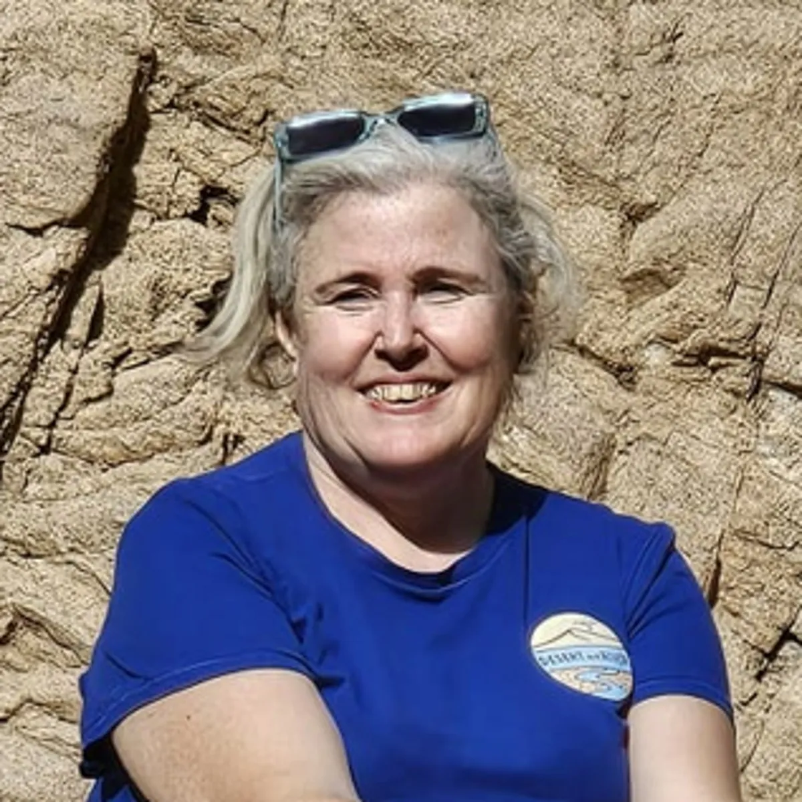
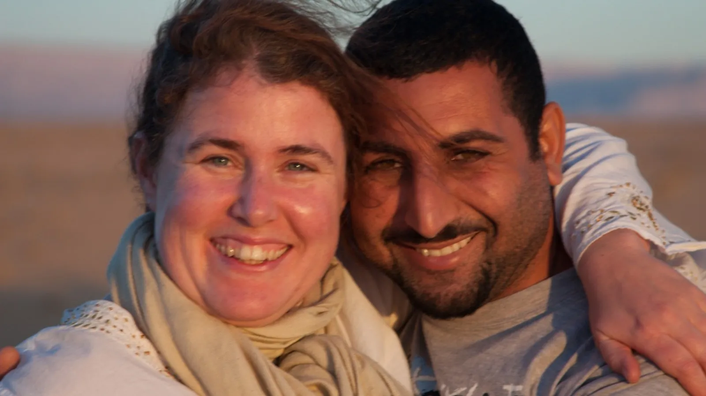

האנשים שמאחורי Desert & River
חיים משותפים שעוצבו בידי ההיסטוריה, האכפתיות והמדבר. קראו את הסיפור של אנט, את הדרך המשותפת שלנו ואת הדרך של ג'וזף.

ההיסטוריה מעולם לא הייתה רק בספרים
נולדתי בהולנד ב-1974, בבית מלא ספרים, סיפורים ואהבה עמוקה להיסטוריה. בזמן שילדים אחרים שיחקו, אני הייתי מוקסמת ממשהו שרוב האנשים לא רואים: הרעיון שמתחת לרגלינו שוכבים עולמות שלמים.
רומאים. כפרים מימי הביניים. שבטים פרהיסטוריים. שכבות של זמן שנחות בשקט באדמה. אם חופרים, אולי מוצאים מטבע, שבר כלי חרס, פיסה מחייו של מישהו לפני מאות שנים.
כשהמורים שאלו אותי מה אני רוצה להיות, עניתי בלי לחשוב פעמיים: ארכיאולוגית.
לא הבנתי לגמרי את המקצוע, אבל הבנתי פליאה. הבנתי אוצרות. הבנתי את הקסם שבחשיפת סיפורים שהזמן קבר.
אמא שלי עודדה את החלום הזה. היא נתנה לי ספר על ארכיאולוגיה בהולנד, מלא בתמונות של ממצאים שהוצאו מהאדמה. במיוחד הקסימו אותי קברי האבן העתיקים בצפון, ההונבדן: אבנים ענקיות שהוצבו לפני אלפי שנים. פעם האמינו שענקים בנו אותן. למעשה אלה חדרי קבורה בני 5,000 שנה. הם עדיין עומדים בנוף הפתוח, עדים שקטים לעבר רחוק.
ההיסטוריה לא הייתה רק משהו בספרים. היא הייתה חיה.
באותו זמן גיליתי תשוקה נוספת: שפות. מילים באו לי בקלות, ואיתן הגיע געגוע למקומות רחוקים. הטיולים קראו לי. אחרי שסיימתי תואר בהיסטוריה קיבלתי החלטה מעשית אבל הרפתקנית: הפכתי למתרגמת. זה היה הרבה לפני שמישהו דיבר על נוודים דיגיטליים, אבל כבר חלמתי על חיים בלי גבולות. אם אני יכולה לתרגם, אני יכולה לעבוד מכל מקום בעולם.
ואז הגיעה מצרים
בטיול עם אחי וגיסתי ביקרתי בדהב. ערב אחד נסענו למדבר. אכלנו ארוחת ערב תחת שמיים אינסופיים. השקט היה עצום. הכוכבים הרגישו קרובים מספיק כדי לגעת בהם. משהו השתנה בי באותו לילה. שני לילות במדבר לא הספיקו.
אז הזמנו טיול ארוך יותר עם מדריך מדבר מקומי: ג'וזף.
נסענו עמוק לתוך סיני, אל מקדש חתחור העתיק בסרביט אל-חאדם, מקום שמעט מאוד מבקרים זוכים לראות. שם, באמצע המדבר, מוקפים בחורבות עתיקות יותר מכל דמיון, קרה משהו יוצא דופן.
התאהבנו. במקדש חתחור, אלת האהבה המצרית הקדומה. זה הרגיש כמעט כאילו זה היה כתוב באבנים.
כשחזרתי להולנד, הלב שלי לא נשאר שם. חזרתי למצרים: אל ג'וזף, אל המדבר, אל ההיסטוריה החבויה בהרי סיני.
גילינו שאנחנו חולקים אותה תשוקה: אהבה עמוקה להיסטוריה ולכוח השקט של המדבר. וככל שחקרנו יותר, הבנו משהו מפתיע: מעט מאוד אנשים באמת מכירים את ההיסטוריה של סיני. דרכי המסחר העתיקות שלו. המקדשים. הכתובות. הסיפורים שנשכחו.
אז החלטנו לשנות את זה.
התחלנו לחקור, ללמוד ולהלך בשבילים בעצמנו. לא רצינו להציע סתם טיולי מדבר. רצינו להציע מסעות בזמן. לעמוד במקומות עתיקים ולספר את הסיפורים האמיתיים. לתת לאנשים להרגיש את מה שאנחנו הרגשנו: שההיסטוריה לא מתה. היא מחכה.
וכך התחילו החיים המשותפים שלנו: באהבה, בהיסטוריה, ועם המדבר כעד.

מסעות מעבר לשגרה
נפגשנו לראשונה במדבר, במקדש חתחור בסיני, שם ג'וזף הדריך טיול שעשיתי עם אחי וגיסתי. אף אחד מאיתנו לא ידע אז שהמפגש הזה יעצב את שארית חיינו.
המסע הזה לא רק הפגיש בינינו, הוא הצית אהבה עמוקה למדבר ולהיסטוריה הנסתרת שלו. עם הזמן, הקסם המשותף הפך לחיים משותפים, ובסוף לדרך חדשה של הדרכה.
Desert & River צמחה מהתחושה הזאת: הרצון להציע מסעות עם יותר זמן, יותר אמת, יותר אכפתיות לבעלי חיים ויותר כבוד לאדמה עצמה.
ג'וזף כבר התחיל לסלול את דרכו. ב-2005 הוא ייסד עם אחיו בוב את King Safari. ב-2008 הצטרפה אשתו אירינה ועזרה לבנות את החברה. באותה שנה הגיעה גם אנט, וארבעתנו עיצבנו יחד את King Safari. בתשוקה, בעבודה קשה ובאינספור ימים בהרים ובוואדיות של סיני, החברה צמחה.
ב-2011 הגיעה המהפכה, ואיתה אי ודאות ואתגרים. אבל נשארנו. האמנו במדבר ובמה שבנינו. ב-2015 הקמנו ארבעתנו גם את מלון סבבה, וב-2020 פתחנו את מלון לידיה. המשכנו לצמוח, תמיד יחד.
ב-2025 משהו השתנה בנו. ג'וזף ואנט מצאו את עצמם מתגעגעים שוב למשהו אישי יותר. שנינו אוהבים את המדבר עמוקות: להיות תחת הכוכבים, ללכת בשקט, להתבונן בבעלי החיים. אנחנו אוהבים את כל בעלי החיים: חתולים, כלבים, גמלים. והתחלנו לחשוב לעומק איך באמת צריך לעשות טיולי מדבר.
לעיתים קרובות מדי מעמיסים על הגמלים מים, ציוד קמפינג ואספקה כבדה, רק כדי לחסוך את העלות של רכב מלווה. זה אולי נראה רומנטי, אבל זה קשה לבעלי החיים. אצלנו, רווחת החיות באה ראשונה. בטיולים של Desert and River תמיד יש איתנו רכב מלווה שנושא את הציוד, האוכל, המים וציוד הקמפינג. הגמלים נושאים רק שמיכות קלות כדי שהאורחים ישבו בנוחות. כשאנחנו נוסעים עם גמלים, אנחנו אפילו מביאים להם אוכל טוב.
וכמובן, אנחנו מביאים אוכל נהדר גם לעצמנו. כל ערב אנחנו מבשלים משהו מיוחד על האש הפתוחה. אנחנו מכינים פיצה, סוגים שונים של לחם וקינוחים כמו בננה ספליט וקראמבל תפוחים. אנחנו כל הזמן ממציאים מתכונים חדשים שאפשר להכין במדבר. ארוחות משותפות תחת הכוכבים הן חלק מהקסם.
אנחנו מבקרים במקומות מפורסמים אם האורחים רוצים, כמו הקניון הצבעוני וקניון ערדה, אבל אנחנו מסרבים למהר. אנחנו לא דוחסים את הקניון הצבעוני, הקניון הלבן בעין חודרה, קניון ערדה, סלע הפטרייה וכל השאר ליום אחד לחוץ, עם עשר דקות פה וחמש דקות שם. אנחנו לוקחים את הזמן. מתבוננים בכתובות. מרגישים את השקט. ישנים תחת הכוכבים. נותנים למדבר להיחוות, לא להיצרך.
אנחנו גם מדברים: על חיי הבדואים, על חיי היומיום במצרים, על מסורות, היסטוריה והמציאות של היום. אורחים שמבלים איתנו שלושה ימים במהלך חופשה של שבועיים מספרים לנו לא פעם שאלה היו שלושת הימים המשמעותיים ביותר בכל הטיול. הם למדו יותר, ראו יותר וחוו לעומק יותר מאשר בכל שאר הימים יחד.
ב-2026 הקמנו סוף סוף יחד את Desert and River, השתקפות של כל מה שאנחנו מאמינים בו. המסעות שלנו עוסקים באמת, במקום הולדתו של האלפבית, בקברים בני 5,000 שנה ובאמנות מערות בת 12,000 שנה, אבל גם באכפתיות, בזמן, בחיבור ובאהבה לארץ יוצאת הדופן הזאת.
אנחנו פשוט נותנים לאנשים את מה שיש לנו: את האהבה שלנו למדבר, את הכבוד לבעלי החיים שבו, את התשוקה להיסטוריה ואת הקסם השקט של שינה תחת שמיים מלאי כוכבים.
אנחנו פועלים עם אישורים, בהתאם לתקנות, עם ביטוח ומתוך חובת זהירות, ומתכננים עם הכנה נדיבה: רכבים, דלק, אוכל, מים ותוכניות גיבוי הם תמיד חלק מעבודה אחראית במדבר.

מחורבות נסתרות אל שקט המדבר
נולדתי במרץ 1977 בכפר קטן ליד סוהאג'. כשהייתי ילד קטן, אולי בן שלוש או ארבע, העולם שלי כבר היה מלא סודות.
ממש מתחת לכנסייה המקומית שלנו היה עולם נסתר של היסטוריה מצרית עתיקה ונוצרית קדומה. אני והחברים שלי נהגנו להתגנב לשם לשחק, למרות שהמבוגרים תמיד הזהירו אותנו להתרחק.
אני חושב שמשם באמת התחילה האהבה שלי להיסטוריה: בצללים האפלים של החורבות האלה.
אבל כשהייתי בן שש או שבע, המשחק נגמר. התחלתי לעבוד במפעל מתכת. זו הייתה עבודה מכנית כבדה, כבדה מדי לילד, אבל דווקא המפעל הזה לימד אותי לאהוב לקרוא. שנאתי את השמן ואת העבודה הקשה כל כך, שידעתי שבית הספר הוא הדרך היחידה שלי החוצה.
החלום של 65 גרוש
נהייתי אובססיבי לספרים. כשסיימתי את ספרי הלימוד, רציתי עוד. אז הרווחתי 25 גרוש בשבוע במפעל. אבא שלי נתן לי עוד 5 גרוש ביום החופש שלנו, כך שהיו לי 30 גרוש לכל השבוע.
רוב הילדים היו קונים ממתקים, אבל אני חסכתי כל מטבע. אם חסכתי שבועיים, יכולתי סוף סוף לקנות ספר עבה ב-60 או 65 גרוש. לקח לי שבוע שלם לקרוא אותו, והדפים האלה היו הבית האמיתי שלי.
ממשק בית לדהב
בסופו של דבר נסעתי לקהיר. עבדתי בהמון עבודות שונות, מנסה למצוא את הדרך שלי. יום אחד פגשתי מישהו שאמר לי: „בוא לעבוד בדהב.” אפילו לא ידעתי מה זה דהב. אבל אהבתי לנסות דברים חדשים.
התחלתי מהתחתית, במשק הבית בחניון לינה. משם התקדמתי לפקיד קבלה, ובסוף הפכתי למנהל. נסעתי לכל מקום בשביל העבודה, קהיר, לוקסור, אסואן, ולמדתי כל חלק בעולם התיירות.
למצוא את המדבר, ואת אנט
ב-2005 הצטרף אליי אחי בוב, והחלטנו לקפוץ למים ולהקים חברה משלנו. התחלנו להוביל טיולים במדבר. התאהבתי בשקט שם.
רוב האנשים לא מבינים כמה עשיר סיני: יש בו היסטוריה מתקופת האבן ועד האלפביתים הראשונים. זה מקום שקט ועתיק שמדבר אליך.
באחד מטיולי המדבר האלה פגשתי את אנט. התאהבנו, ואז התחיל המסע האמיתי שלנו יחד.
כשאני מסתכל אחורה על הילד במפעל המתכת, אני מבין שכל גרוש שחסכתי וכל ספר שקראתי הובילו אותי בדיוק לכאן: לשקט של המדבר ולחיים שבניתי במו ידיי.
אנחנו לא ממהרים במדבר.
שקט, חום, נסיעות משובשות ופשטות הם חלק מהמציאות. אנחנו לא מייפים את זה, אנחנו מכבדים את זה.
על מה אנחנו שומרים כשאנחנו מדריכים
סביבות רגישות
אנחנו מגבילים גישה במודע, שומרים על קבוצות קטנות ומארגנים טיולי ניקיון כשצריך.
הקשרים עם הבדואים
אנחנו נוסעים ברשות, לא מתוך זכאות, ומחזירים בצורה חומרית ומכבדת.
חוויה אמיתית
בלי יציאות יומיות, בלי מופע. נוכחות והקשבה קודם כול.
בטיחות וחובת זהירות
אישורים, תכנון והכנה נדיבה הם לא עניין למשא ומתן.
מתחילים בשיחה
ספרו לנו על מסגרת הזמן, תחומי העניין וסגנון הטיול שלכם. נייעץ לכם מה מציאותי, מכבד ושווה לעשות.
Desert & River
טיילו עמוק יותר בסיני, עם מסעות בהתאמה אישית, הבנה תרבותית וחיבור מקומי אמיתי.